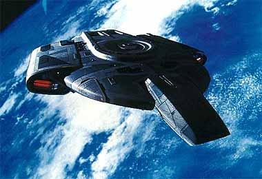
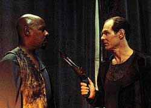

|
fcil ser santo no paraso... (Parte IV)
A completa histria
dos Maquis
 Voltamos
a ouvir sobre Eddington (e os Maquis) no clssico episdio da
quinta temporada de Deep Space Nine "For The
Uniform". Ben Sisko, ainda em sua caada pelo traidor
(que j dura oito meses), chega a um campo de refugiados Maquis
em busca de um informante(de nome Cing'ta), quando surpreendido
por Eddington armado, que explica que o senhor Cing'ta teve
"um pequeno problema" por ter trado os Maquis e no
poder se Voltamos
a ouvir sobre Eddington (e os Maquis) no clssico episdio da
quinta temporada de Deep Space Nine "For The
Uniform". Ben Sisko, ainda em sua caada pelo traidor
(que j dura oito meses), chega a um campo de refugiados Maquis
em busca de um informante(de nome Cing'ta), quando surpreendido
por Eddington armado, que explica que o senhor Cing'ta teve
"um pequeno problema" por ter trado os Maquis e no
poder se
juntar a eles.
Aps uma tensa conversa em que Eddington literalmente
"esfrega" a situao dos refugiados Maquis na cara de
Sisko, o Maquis se teleporta para sua nave em rbita, logo
seguido por Sisko, se teleportando para a Defiant. A Defiant segue
a nave do Lder Maquis para as Badlands, Sisko pede ajuda ao
capito Sanders da nave estelar USS Malinche (com quem ele se
comunica atravs do recentemente instalado holo-comunicador) para
emboscar Eddington.
Porm, subitamente Eddington d meia volta em sua nave e encara
a Defiant aparentemente de forma suicida, mas para surpresa geral
ele ativa um vrus que estava adormecido no computador (que ele
havia plantado quando ainda servindo como oficial de segurana em
DS9) da Defiant, deixando a poderosa nave a deriva no espao
completamente indefesa. Sem perder a oportunidade de
"infernizar" ainda mais Sisko, ele ainda d uns
"tirinhos" na Defiant e deixa a rea. Sisko,
completamente humilhado, tem sua nave rebocada de volta estao
pela Malinche.

O'Brien est informando a Sisko que a Defiant precisa de duas
semanas para ser reparada quando chega notcia estao de
que os Maquis atacaram dois cargueiros Bolianos carregando
compostos qumicos. Dax inicia uma anlise tentando descobrir o
que os Maquis poderiam fazer com tais compostos. O capito
Sanders visita Sisko e lhe comunica que a Frota Estelar est
retirando o caso Eddington das mos de Sisko (devido insatisfao
com seu progresso at agora) e passando para as dele. A razo
dada pela Frota Estelar que quando Eddington est envolvido
Sisko vulnervel: Eddington simplesmente o conhece bem demais.
Sisko somente pode desejar a Sanders "uma boa caada".
Quando seu colega parte, Sisko fica em seu escritrio
literalmente no fundo do poo.
Sisko descarrega seus punhos em um saco de areia e suas palavras
nos ouvidos de Jadzia:
- Em 25 anos de servio, eu nunca fui retirado de uma tarefa --at
agora.
- ELE trabalhou como meu comandado por UM ANO E MEIO. Eu o via
quase todo dia --lia os seus relatrios-- e eventualmente o
convidava para jantar --e mesmo cheguei a lev-lo a um jogo de
Beisebol na holosute uma vez. E eu nunca percebi.
- minha funo ser um bom juiz de carter. E o que eu fiz?
Eu no somente no percebi nada --eu ainda o recomendei a uma
promoo.
- E qual a minha desculpa? Ele um transmorfo? No. Ele
um ser com sete vidas de experincia? No. Ele um Profeta? No.
Ele s um homem. Como eu. E ele me tapeou.
Aps este desabafo, Kira os chama ao Ops (Central de Operaes
de DS9), informando-os de que os Maquis detonaram uma arma biognica
(feita com os compostos qumicos roubados) em um colnia
Cardassiana em Veloz I e que isto tornar o planeta totalmente
inadequado fisiologia Cardassiana, mas no humanide em
geral, em muito pouco tempo.
A Malinche est muito longe do local do ataque ento Sisko
decide levar a Defiant "remendada com fita adesiva" para
o local do incidente, antes que Eddington tenha tempo de
"limpar" a DMZ (Zona Desmilitarizada) de todos os
colonos Cardassianos e montar novas colnias Maquis nos seus
ex-mundos. Porm novamente com a ajuda de falsas assinaturas de
dobra, Eddington consegue enganar Sisko mais uma vez, emboscar e
desabilitar a Malinche e ao final ainda envia a Sisko uma cpia
do livro "Les Miserables", de Victor Hugo, apontando as
semelhanas entre Sisko e o inspetor Javert, um inspetor francs
que perdeu 20 anos de sua vida caando um homem chamado Valjean
(obviamente o prprio Eddington, segundo o seu raciocnio) por
este ter roubado uma fatia de po.
Enquanto a Defiant assiste a Malinche em seus reparos, o Capito
Sanders envia a Sisko uma mensagem codificada que eles
interceptaram durante o confronto com os Maquis. Odo (em DS9)
descobre que a mensagem uma "cano de ninar Breen"
que ele intui (devido sua prvia experincia com Eddington)
ser algum sinal para reagrupamento em alguma instalao Breen prxima
DMZ.
Eles conseguem obter a rota de um cargueiro Maquis, deixando tal
instalao Breen, mas acabam chegando novamente tarde demais ao
seu destino, pois os Maquis j detonaram mais uma arma biognica
na atmosfera da colnia do planeta Quatal. Eddington ataca uma
nave de sobreviventes Cardassianos que comea a cair em direo
ao planeta. Sisko no tem outra escolha seno ajudar os
Cardassianos e deixar Eddington escapar mais uma vez.
Sisko, estudando o livro "Les Miserables", entende que
em sua cabea Eddington um heri, e um heri sempre se
sacrifica ao final da histria por um bem maior, quando preso em
uma situao cuidadosamente fabricada pelo vilo.
Ento Sisko decide bancar o vilo. Ele emite um ultimato aos
Maquis, dizendo que vai lanar torpedos com ogivas contendo
resina de triltio em uma colnia Maquis em Solosos III, o que
deixar o planeta no-habitvel por mais de 50 anos para vida
humana, e recomenda que os colonos iniciem imediatamente os
preparativos para a evacuao.
Eddington se apresenta no local e diz que Sisko est blefando.
Sisko ordena o lanamento, Worf hesita mas abre fogo, a detonao
comea a devastar a atmosfera do planeta.
Sisko (continuando a bancar o vilo infinitamente cruel) ameaa
fazer o mesmo com cada colnia Maquis da DMZ. Eddington novamente
duvida (argumentando que Sisko no tiraria os lares de milhes
de pessoas) e Sisko manda a Defiant seguir no curso para o prximo
alvo.
Eddington oferece o retorno das armas biognicas, mas Sisko fora
at o fim, obrigando Eddington a se entregar.
De volta estao, vemos j Eddington preso. Jadzia
cumprimenta Sisko pela manobra, mesmo sem ele ter tido aprovao
da Frota para efetuar o bombardeio. Jadzia tambm diz que s
vezes gosta quando os viles vencem.
Na DMZ, relocaes de emergncia dos colonos so feitas para
dar conta das colnias atacadas.
Uma coisa o episdio "For The Uniform"
definitivamente no ; ele no uma anlise ideolgico-poltica
das relaes entre a Federao e os Maquis utilizando Sisko e
Eddington como microcosmos de tal estudo.
 Acredito
que isto possa frustrar alguns espectadores, especialmente em funo
do maravilhoso discurso de Eddington em "For The
Cause" e do quo verdadeiro ele soou em relao
atitude geral da Federao quanto aos Maquis.
O que eu posso dizer em favor do aspecto temtico do episdio
que ao seu final fica "alguma coisa no ar" (chamem de
subliminar se quiserem) que parece apontar um dedo acusador para a
Federao, especialmente em face do quo extremo Sisko tem de
ir para capturar Eddington. Aparentemente a noo de Eddington
de que ele o heri e Sisko o vilo no foi introduzida no
episdio apenas com propsitos de entretenimento.
O que "For The Uniform" na realidade : um
thriller de ao alimentado pela caada obsessiva de um oficial
comandante a um subordinado seu que o traiu, sendo este
subordinado uma figura infinitamente simptica, nobre,
inteligente e astuta.
Neste termos, e propelido por dilogos absolutamente
sensacionais, o episdio beira a perfeio.
A direo de Victor Lobl (que depois dirigiria o LEGENDRIO
episdio "In The Pale Moonlight" da sexta
temporada) excelente, principalmente em capturar as expresses
de Sisko nos momentos mais tensos, encenar brilhantemente a cena
do lanamento da Defiant "remendada com fita adesiva",
usar de forma dramaticamente interessante o holo-comunicador
(dispositivo que poderia ter cado facilmente no ridculo em mos
menos gabaritadas) e principalmente manter a fluidez e o senso de
"convite ao espectador" em todo o episdio.
Grande parte do sucesso do episdio se deve interao entre
Eddington e Sisko e neste quesito a dupla Marshall e Brooks se
apresentou de forma estupenda.
A obsesso de Sisko parece casar como uma luva tanto no
personagem quanto com o ator. Eddington parece envolvido em uma
tal aura de herosmo que fica difcil de no simpatizar. Terry
Farrell tambm est no seu melhor como Dax e as interaes
dela com Sisko so do tipo que SEMPRE funcionam.
Eddington mostra os refugiados a Sisko e exclama: "Eles so
humanos". Ser que isto exprime algum tipo de conotao
racista a Eddington ou foi apenas uma linha no intencional?
Adorei o holo-comunicador. No sei como no inventaram isto
antes.
A atuao de toda a tripulao da Defiant com metade dos
sistemas inoperantes durante toda a misso, especialmente durante
o lanamento, foi simplesmente CONTAGIANTE. MAS QUE TRIPULAO
SENSACIONAL!
Foi formidvel (principalmente pela forma sutil como foi feita) a
referncia de Dax ao episdio da segunda temporada "Blood
Oath", tambm escrito por Peter Allan Fields (roteirista
nas duas primeiras temporadas da srie). Em "Blood
Oath", ela deixou o seu posto em DS9 e se juntou a trs
Klingons (aqueles mesmos da srie original de Jornada: Kor, Kang,
Koloth) para empreender uma misso de vingana.
A "anlise" de Dax ao "Corcunda de
Notredame", tambm de Victor Hugo, foi no menos
sensacional.
Muito boa msica. Eu sei que difcil notar, mas repare bem na
cena em que Sanders comunica a Sisko que est assumindo a caada
a Eddington e a cena em que finalmente Eddington se entrega, de
fato uma msica bastante efetiva.
Nesta cena em que o capito Sanders diz ter sido enviado para
render Sisko na caada a Eddington porque o Comando da Frota
Estelar acredita que quando Eddington est envolvido Sisko
vulnervel um eco do que o prprio Eddington disse
anteriormente: "Eu estou no controle aqui." Grande drama
e a expresso de Sisko simplesmente impagvel.
sempre um prazer assistir a Eric Pierpoint, aqui interpretando
o capito Sanders. Eric mais conhecido como o detetive George
Francisco de "Alien Nation".
Eu
realmente estava esperando que em algum momento Eddington jogaria
as atitudes de Kassidy Yates em "For The Cause"
na cara de Sisko. Boa oportunidade perdida aqui.
- Existe uma bobeada no roteiro (facilmente corrigvel) pelo fato
de O'Brien informar que os transportes da Defiant estavam
inoperantes e mais tarde estes mesmos transportes serem utilizados
para transportar equipamento e pessoal para a Malinche e
sobreviventes Cardassianos.
Eu no gosto do fato de que a Dax fica pesquisando sobre os
compostos qumicos e no percebe que eles poderiam ser usados na
fabricao de uma arma biognica contra Cardassianos e quando
tal arma usada, ela "descobre" que tal arma poderia
ser de fato fabricada em uma frao de segundo. Tambm
facilmente corrigvel, mas um bocado ridculo.
Se eu entendi corretamente, o holo-comunicador necessita de
hardware especializado nos dois extremos da comunicao. Se isto
de fato verdade, como Eddington conseguiu equipar uma nave
Maquis com um holo-comunicador?
Eu no acho que Sisko estivesse "ENLOUQUECIDO" e que
tenha usado "ALM DE FORA MORTAL EM ATOS DESUMANOS".
Eddington e os Maquis tornaram-se uma ameaa intolervel
estabilidade da DMZ, com ataques a naves estelares e a utilizao
de armas "destruidoras de biosferas". Aos leitores devo
lembrar que a Federao, pelos termos do Tratado (que at
aquele ponto no deu sinal algum de ter sido revogado), tem
reponsabilidade de defesa sobre estas colnias Cardassianas.
Sisko usou estritamente a fora necessria para resolver a situao,
ele atacou um planeta colnia (ao contrrio de um planeta com
grande populao nativa), ele usou um agente biognico (ao
contrrio de um bombardeio de alguma arma "destruidora de
planetas", como ogivas de anti-matria ou dispositivos
tricobalto), um com efeito extremamente retardado, para dar
oportunidade de evacuao populao local, e avisou do
ataque com antecedncia.
E ele ao final do episdio no terminou (digamos) em um canto de
um quarto chorando, o que confirmaria que a caada a Eddington o
teria atingido de forma brutal, esfacelendo seu senso de dever,
tornando-o um mero "Capito Ahab". Ao final do episdio
ele estava sorrindo e fazendo piada, ele assumiu o controle, que
Eddington possua no comeo do episdio.
Corte marcial de Sisko? De forma alguma. J pensaram no alvio
do comando da Frota com a priso de Eddington (basta imaginar os
noticirios da Federao sobre Eddington nestes oito meses em
que ele liderou os Maquis)? Eu acho que Sisko ficou mais prximo
de ganhar uma medalha do que ser levado a julgamento.
Ao final, ficamos com um thriller de ao com brilhante execuo,
dilogos maravilhosos, um senso residual de crtica a Federao
e algumas interessantes discusses (ps-episdio) sobre obsesso
e dever.
Continua...
Luiz
Castanheira editor do Trek
Brasilis
|